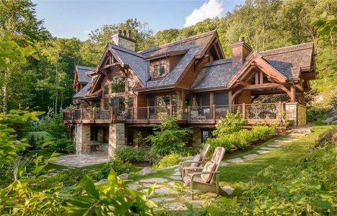
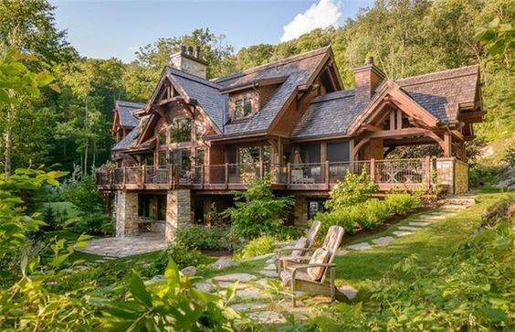

Floorplan
What is the beauty of our apartment?
The beauty of an apartment can be subjective and can vary from person to person. Some people may appreciate modern architecture and clean lines, while others may prefer a more traditional look with ornate details. Some common aspects that people may find beautiful in an apartment include:
- Aesthetic appeal: A well-designed apartment with beautiful decor and furniture can be visually pleasing to the eye. This could include stylish lighting fixtures, tasteful artwork, and colorful accents.
- Natural light: An apartment with large windows that allow natural light to flood in can create a bright and airy atmosphere that many people find beautiful.
- Views: An apartment with beautiful views of the surrounding area, such as a city skyline or a nearby park, can be very attractive to many people.
- Spaciousness: An apartment that feels open and spacious can be beautiful, as it provides room to move around and allows for comfortable living.
- Functionality: An apartment that is well-designed and functional can be beautiful in its own way. This could include features like ample storage space, a well-organized kitchen, or a practical layout that makes everyday living easy and efficient.
Overall, the beauty of an apartment is in the eye of the beholder, and what makes one apartment beautiful may not be the same for another. However, these are some general aspects that many people find attractive in their living spaces.
 
